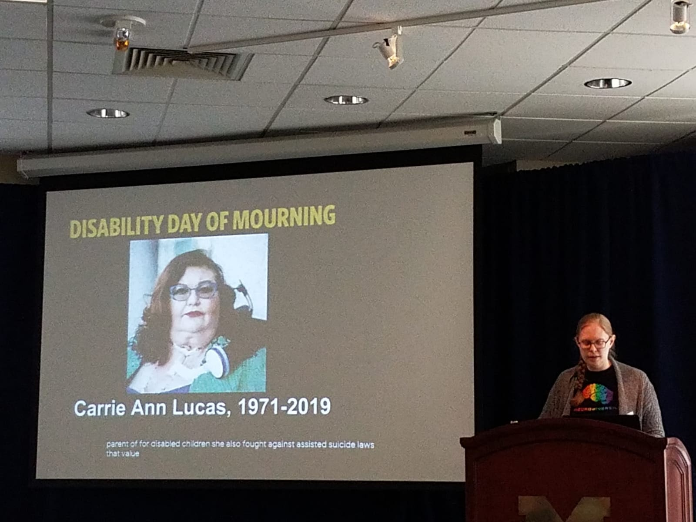
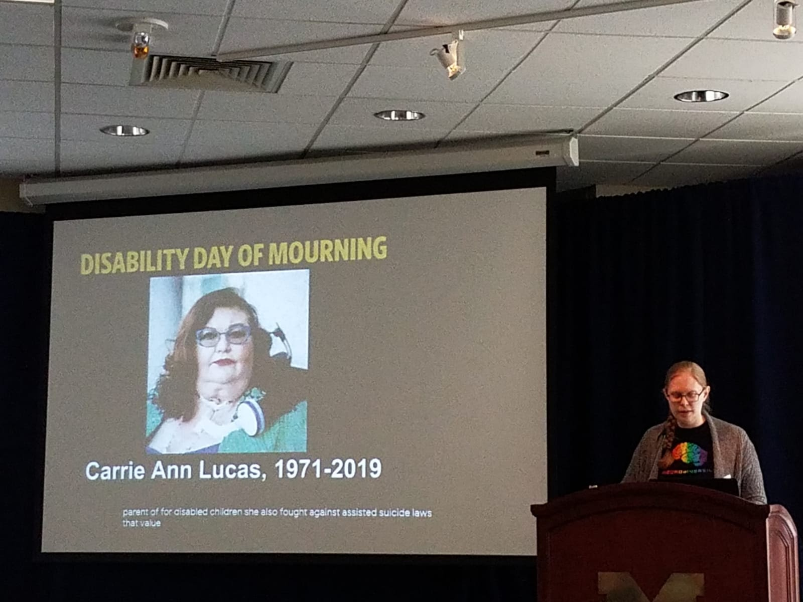

Disability Culture @ University of Michigan (DC@UM)
About
In the University of Michigan's 2016 campus climate survey, 48% of disabled students, nearly a third of disabled staff, and a quarter of disabled faculty reported experiencing at least one incident of discrimination based on their disability identity. Our cross-disability group is dedicated to bringing disabled students, staff, faculty, alumnx, community members, and allies together in order to build a prideful community that centers disability culture, as it intersects with our other identities. We foster friendships, coordinate events (e.g., our recent panel on disability inclusion that drew 500 attendees), and work toward the establishment of a Disability Cultural Center at the University of Michigan.
Contact
Sign up for our Disability Culture Events Listserv
Gallery


 
